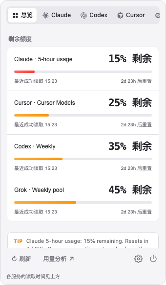

QuotaBar is a lightweight Tauri menubar app that watches your Claude Code, Codex, Cursor, Grok, and Antigravity usage — live quota windows, per-provider tray indicators, and local cost estimates computed on-device.

Features
QuotaBar polls Anthropic, ChatGPT, Cursor, and Grok in the background using the local credentials you already have. Tokens never go to QuotaBar. Cost estimates stay on-device.
Real-data 5-hour, 7-day, Opus, Sonnet, and weekly windows per provider, with reset times shown as days plus hours when available.
Independent menu bar indicators for each provider. Enable or hide each tray while keeping at least one entry point.
Today, week, and month cost estimates for Claude Code, Codex, and Cursor — derived offline from on-device logs.
Reads Claude Code OAuth credentials without ever refreshing or writing tokens. Your auth material stays untouched.
Refreshes every 60 seconds, backs off to 5 minutes on 429 rate limits and to 1 hour on auth failures, serving stale cache in between.
A native-feeling popover shell with provider cards, theme options, macOS Hide Dock, and per-provider tray controls.
Providers
Tray percentages always represent used quota, not remaining — so a full bar means it's time to slow down.
Get started
Download the installer for your platform, or build from source with Node.js and the Rust toolchain.
Grab the .dmg for macOS or the .msi / .exe for Windows from GitHub Releases.
QuotaBar reads existing local auth — claude login, ~/.codex/auth.json, Cursor, or Grok Build. It never manages login flows itself.
Quota indicators appear per provider and refresh every 60 seconds. Click any icon for the full popover dashboard.
# Build from source $ git clone https://github.com/majiayu000/quotabar.git $ cd quotabar $ npm ci $ npm run tauri dev # Local macOS app bundle $ npm run tauri build -- --bundles app
Building from source requires Node.js with npm, Rust, and the Tauri prerequisites for your OS. These tools are not required to run a downloaded installer.